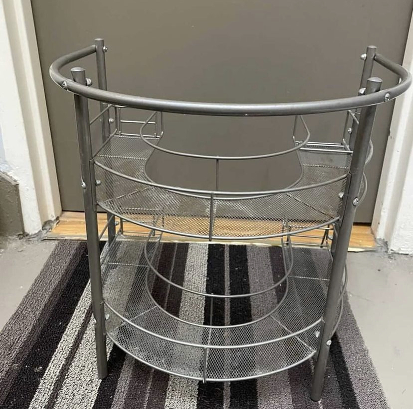
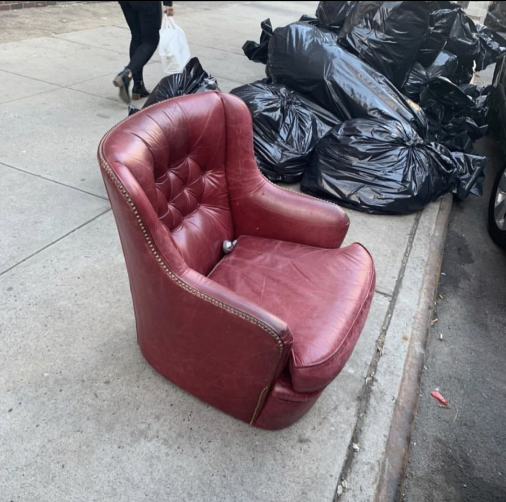

Now that you're completely sold on stooping,
you must be wondering how you can find stooped items near you. Use our filter to find the kind of items you can stoop in your borough. You may be surprised what you'll find! Click here to go back to the main page!

@ 29-05 23rd Ave.
@ 41-41 51st St.
@ 44th St. b/w Greenpoint and 48th Ave.
@ 32-15 33rd St.
@ 82nd & 3rd
@ Platt St at Gold St. 36x36 framed pop art print
@ 138th and Rider Ave
@ Cliff St near John St.
@ William St at Exchange Pl.
@ New York Ave and Dean S
@ 14th street between 3rd and 4th in Park Slope/Gowanus

@ 89th btw Lexington & 3rd avenue
@ 3 e 66th
@ 4106th and West End
@ 158th between Gerard and River Ave
@ 415 Riverside Drive
@ Box of vintage playbills at W 105th St between Columbus and Amsterdam
@ Ainslie between Graham and Humboldt in Williamsburg
@ 28th St. b/w 24th and Hoyt Ave.
@ 34-43 28th St.
@ 42-26 81st St.
@ 10-11 46th Ave.
@ Bement and Harvest
@ 100 Van Cortlandt Avenue